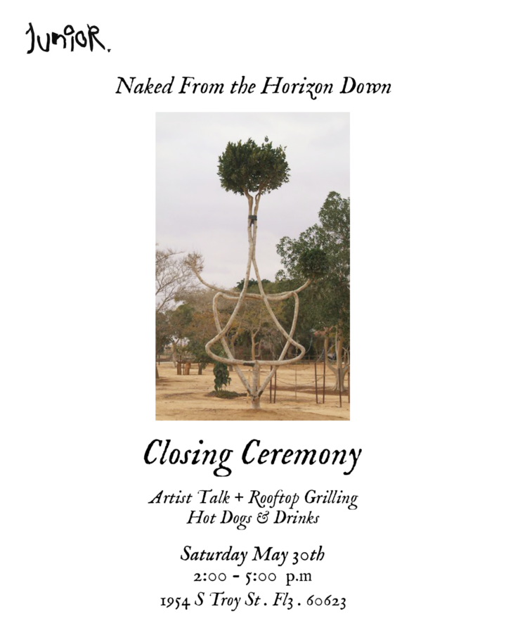

Naked From The Horizon Down – Closing Reception
This Saturday: the summer trifecta. Exhibition closing. Artist talk with both artists. Rooftop grill session.
ARTIST TALK @ 3pm – Featuring exhibition artist Danni O’Brien and Kate Kljngbeil
Join us for one final hang before we enter our first-ever official summer break — a brief and glamorous disappearance until the end of August. Come talk art, eat a hot dog, and linger on the roof a little too long. 🌭
Saturday, May 30th
2:00–5:00 PM
Artist Talk at 3:00 PM
1954 S Troy St, 3f
Chicago, IL 60623